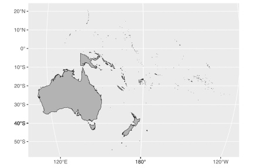
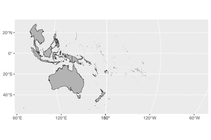
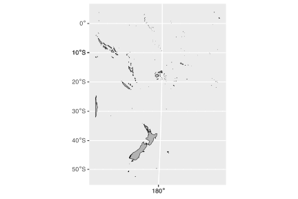
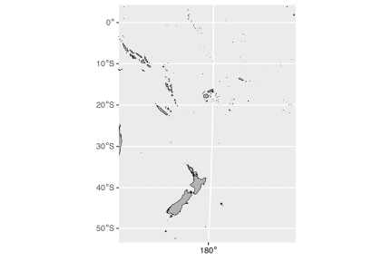

10. The Fiji Earthquake Data
Using Natural Earth data with the Fiji earthquake data
![]()
Here I will plot the built-in earthquake dataset (datasets::quakes).
For a global map of earthquakes, see my plot of the Kaggle earthquake data.
Two new concepts will be introduced in the Chapter:
- Geographic Coordinate Systems
- Projected Coordinate Systems
These are specified to the mapping / plotting functions via the Coordinate Reference System (CRS) through functionality built into the sf package.
You will also learn how to deal with polygons that cross the dateline (0° wrapping back onto 360°) or the anti-meridian (-180° folding back onto +180°).
1 Load packages and data
I will use the Natural Earth data and manipulate it with the sf package functions. This package integrates well with the tidyverse.
THIS PAGE IS NOT DSPLAYING THE OUTPUT OF CODE AT PRESENT DUE TO AN UPDATE OF THE SF PACKAGE THAT CAUSED IT TO BREAK. I WILL ENABLE THE OUTPUT AGAIN ONCE THE AUTHORS HAVE CORRECTED THEIR CODE
2 Load the Natural Earth map
The rnaturalearth package has the ne_counties() function which we use to load borders of all the countries in the world. I load the medium resolution dataset and make sure the data are of class sf, i.e. a simple features collection.
sf_use_s2(FALSE)
world <- ne_countries(returnclass = 'sf',
scale = 10, type = "countries") |>
select(continent, sovereignt, iso_a3)
head(world[c('continent')])R> head(world[c('continent')])
Simple feature collection with 6 features and 1 field
Geometry type: MULTIPOLYGON
Dimension: XY
Bounding box: xmin: -109.4537 ymin: -55.9185 xmax: 140.9776 ymax: 7.35578
CRS: +proj=longlat +datum=WGS84 +no_defs +ellps=WGS84 +towgs84=0,0,0
continent geometry
0 Asia MULTIPOLYGON (((117.7036 4....
1 Asia MULTIPOLYGON (((117.7036 4....
2 South America MULTIPOLYGON (((-69.51009 -...
3 South America MULTIPOLYGON (((-69.51009 -...
4 South America MULTIPOLYGON (((-69.51009 -...
5 South America MULTIPOLYGON (((-67.28475 -...Note that for the Natural Earth data the coordinate reference system (CRS) is in the dataset are longitude / latitude coordinates in degrees in a CRS called WGS84. This is the World Geodetic System 1984 commonly used in most GPS devices. The default unit of this CRS is in degrees longitude and latitude.
For more information on CRS, see:
- The PROJ system. The proj-string specified with every map can be used in sf; it can be retrieved using
st_crs()and one can transform between various projections uingst_transform(). PROJ is written in C++ and loaded automagically with sf. - The EPSG coordinate codes, which provide a convenient shortcut to the longer proj-string. Navigating the a page for a projection—WGS84 known as EPSG:4326—gives one the various relevant details, and the proj-string can be located in the PROJ.4 tab under Exports.
More information about the map data is available with the head(world) function (as seen above), namely that the longitude goes from -180° (180° west of the prime meridian) to +180° (180° east of the prime meridian). This means that the anti-meridian cuts some of the polygons in the Pacific along the line where -180° wraps back onto +180°, and this can be problematic for maps of the Pacific. We will get to this later. The latitude goes from -90° (90° south of the equator) to +90° (90° north of the equator).
A very quick map looks like this:

We see above that Africa is centrally positioned. However, I want to focus on the western Pacific region. I am also going to apply a new projection (ESRI:53077, the Natural Earth projection) to it. The ‘rotation’ is accomplished by setting lon_0=170 in the proj-string.
NE_proj <- "+proj=natearth +lon_0=170 "
world_0 <- world |>
st_transform(NE_proj)
ggplot() +
geom_sf(data = world_0, colour = "black", fill = "grey70")
The western Pacific is now focal, but the map looks strange to say the least. This is due to the break at the anti-meridian which causes the polygons to join up in strange and unexpected ways when the central longitude in the map is not displayed at exactly 0° (in my reprojection I made the focus on 170°E and it became the center). I can fix it using st_break_antimeridian() but to do so I must start with unprojected data, and only then apply this function.
world_1 <- ne_countries(returnclass = 'sf',
scale = 10, type = "countries") |>
select(continent, sovereignt, iso_a3) |>
st_break_antimeridian(lon_0 = 170) |>
st_transform(NE_proj)
ggplot() +
geom_sf(data = world_1, colour = "black", fill = "grey70")
3 Zooming in
There are three options for focusing in on a particular area of the map (zooming in):
- selecting only certain areas of interest from the spatial dataset (e.g. only certain countries / continent(s) / etc.);
- cropping the geometries in the spatial dataset using
sf_crop(); and - restricting the display window via
coord_sf().
I will look at each in some detail.
4 Selecting areas of interest
I am interested only in the ‘continent’ called Oceania, which includes the Pacific Islands, Australia, and New Zealand. More correctly, it a geographical region and not a continent. It is comprised of Australasia, Melanesia, Micronesia, and Polynesia which span the the Eastern and Western Hemispheres.
oceania <- world_1[world_1$continent == 'Oceania',]
ggplot() +
geom_sf(data = oceania, colour = "black", fill = "grey70")
Zooming in on only the group of nations included with Oceania reveals another problem. This is, only part of New Guinea is displayed: Papua New Guinea appears on the map but the western side of New Guinea, called Western New Guinea, is absent. This is because Papua New Guinea is part of Micronesia whereas West New Guinea is part of Indonesia (part of the South-eastern Asia region).
There is no easy way to select the countries that constitute Australasia, Melanesia, Micronesia, Indonesia, and Polynesia—unless I create an exhaustive list of these small island nations. But I can use the countrycode package to insert an attribute with the geographic regional classification of the United Nations in the world_1 map. Now all the constituent countries belonging to these regions will be correctly classified to the UN regional classification scheme. Note that I also collapse the countries into their continents by merging all polygons belonging to the same continent (the group_by() and summarise() functions)—I do this because I don’t want to display individual countries.
library(countrycode)
world_1$region <- countrycode(world_1$iso_a3, origin = "iso3c",
destination = "un.regionsub.name")
sw_pacific <- world_1 |>
filter(region %in% c("Australia and New Zealand", "Melanesia", "Micronesia",
"Indonesia", "Polynesia", "South-eastern Asia")) |>
group_by(continent) |>
summarise()
ggplot() +
geom_sf(data = sw_pacific, colour = "black", fill = "grey70")
As we can see above, by including the South-eastern Asia region I complete the mass of land that is New Guinea.
5 Cropping
The above map is good but not perfect. I have in mind zooming in a bit more into the region around Fiji where the earthquake monitoring network is located. One way to do this is to crop the extent of the study region using a bounding box whose boundaries are defined by the extent of the quakes datapoints.
To start, I use the earthquake data and extract from there the study domain and increase the edges all round by a given margin—this is so that the stations are not plotted right on the maps’ edges.
Important! The coordinates in the quakes data are provided in WGS84, so I need to first specify them as such and then transform them to the same coordinate system used by the map.
quakes <- as_tibble(datasets::quakes)
margin <- 15.0
xmin <- min(quakes$long) - margin; xmax <- max(quakes$long) + margin
ymin <- min(quakes$lat) - margin; ymax <- max(quakes$lat) + margin
WGS84_proj <- "+proj=longlat +datum=WGS84 +no_defs +ellps=WGS84 +towgs84=0,0,0"
bbox <- st_sfc(st_point(c(xmin, ymin)), st_point(c(xmax, ymax)),
crs = WGS84_proj)
bbox_trans <- st_transform(bbox, NE_proj)
sw_pacific_cropped <- sw_pacific |>
st_crop(bbox_trans)
ggplot() +
geom_sf(data = sw_pacific_cropped, colour = "black", fill = "grey70")
That looks decent enough, but there’s another way to accomplish the same.
6 Setting the mapping limits in ggplot2
The third approach to get closer to the region of interest is to use the full map extent (the world) loaded at the beginning, but to set the limits of the view window within the coord_sf() function in ggplot().
Do do this, I start with the bbox_sf_trans object, which was obtained by first specifying the coordinates marking the extent of the map in the WGS84 coordinate system and then transforming them to Natural Earth. We can extract the transformed limits with st_coordinates() and supply them to the map.
bbox_trans_coord <- st_coordinates(bbox_trans)
ggplot() +
geom_sf(data = world_1, colour = "black", fill = "grey70") +
coord_sf(xlim = bbox_trans_coord[,'X'], ylim = bbox_trans_coord[,'Y'],
expand = FALSE)
Great! This works well. Note that the coordinates on the graticule are in degrees longitude and latitude, the default for WGS84. By setting datum = NE_proj ensures the graticule is displayed in Natural Earth coordinate system units, which is meters. This might look strange at first, but it is not wrong.
7 Adding the quakes data as points
In order to plot the quakes data, I need to create a sf object from the quakes data. When converting the dataframe to class sf, I must also assign to it the CRS associated of the original dataset. This would be WGS84. Afterwards I will transform it to the Natural Earth CRS.
quakes_sf <- quakes |>
st_as_sf(coords = c("long", "lat"),
crs = WGS84_proj)
quakes_sf_trans <- st_transform(quakes_sf, NE_proj)
head(quakes_sf_trans)R> head(quakes_sf_trans)
Simple feature collection with 6 features and 3 fields
Geometry type: POINT
Dimension: XY
Bounding box: xmin: 1047820 ymin: -2923232 xmax: 1361900 ymax: -2017755
CRS: +proj=natearth +lon_0=170
# A tibble: 6 × 4
depth mag stations geometry
<int> <dbl> <int> <POINT [m]>
1 562 4.8 41 (1104307 -2293735)
2 650 4.2 15 (1047820 -2316276)
3 42 5.4 43 (1323082 -2923232)
4 626 4.1 19 (1113132 -2017755)
5 649 4 11 (1136619 -2293735)
6 195 4 12 (1361900 -2210349)I am going to make a map of the Fiji region and plot the spatial location of the earthquakes, and scale the points indicating the earthquakes’ magnitude by their intensity (mag).
ggplot() +
geom_sf(data = sw_pacific_cropped, colour = "black", fill = "grey70") +
geom_sf(data = quakes_sf_trans, aes(colour = mag, size = mag),
stat = "sf_coordinates",
shape = "*", alpha = 0.4) +
scale_colour_continuous(type = "viridis") +
guides(size = "none") +
coord_sf(expand = FALSE) +
labs(x = NULL, y = NULL,
title = "The Fiji Earthquake Data",
subtitle = "Natural Earth")Now I apply a more appropriate CRS to the map. The WGS 84 / NIWA Albers projection (EPSG:9191) is suitable for the southwestern Pacific Ocean and Southern Ocean areas surrounding New Zealand.
NIWA_Albers_proj <- "+proj=aea +lat_0=-22 +lon_0=175 +lat_1=-20 +lat_2=-30 +x_0=0 +y_0=0 +datum=WGS84 +units=m +no_defs +type=crs"
ggplot() +
geom_sf(data = sw_pacific_cropped, colour = "indianred", fill = "beige") +
geom_sf(data = quakes_sf_trans, aes(colour = mag, size = mag),
stat = "sf_coordinates",
shape = "*", alpha = 0.6) +
scale_colour_continuous(type = "viridis") +
guides(size = "none",
colour = guide_colourbar("Magnitude")) +
coord_sf(expand = FALSE,
crs = NIWA_Albers_proj) +
labs(x = NULL, y = NULL,
title = "The Fiji Earthquake Data",
subtitle = "WGS 84 / NIWA Albers") +
theme_minimal() Reuse
Citation
@online{smit2021,
author = {Smit, AJ},
title = {10. {The} {Fiji} {Earthquake} {Data}},
date = {2021-01-01},
url = {https://tangledbank.netlify.app/BCB744/intro_r/10-mapping_quakes.html},
langid = {en}
}